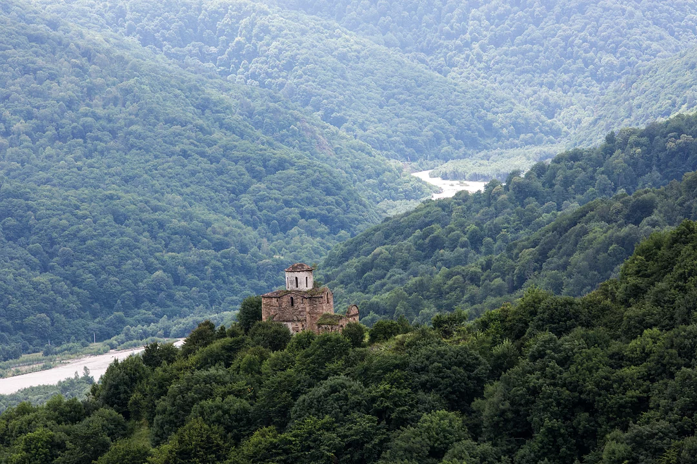

День 1
Встречаемся в гостинице.
Заселение с 14 часов (по запросу возможен ранний или предварительный заезд - оплачивается дополнительно).
Знакомство.
Во второй половине дня:
- кураторская экскурсия по выставке "Артефакты" в усадьбе Рябушинских;
- обсуждение формата мастер-класса;
- лекция о видах фотопроектов;
- просмотр привезенных с собой работ участников;
- постановка задач, обсуждение возможных тем, локаций для съемок;
- съемка в усадьбе и окрестностях;
- ужин в сохранившихся интерьерах парадной столовой усадьбы, общение, обмен мнениями.
Обсуждение, разбор отснятого материала, корректировка выбранных тем.
День 2
Пешеходная экскурсия по историческому центру города "Вышний Волочёк - русская Венеция". Съемка в городе. Обсуждение, разбор отснятого материала, корректировка выбранных тем.
День 3
Едем и поднимаемся на внедорожниках к Сентинскому храму, панорама на Эльбрус. Осматриваем, снимаем до заката.
День 4
Ранний выезд на фотосъемку на целый день в Азгекское ущелье, где можно увидеть цепь великолепных горных озер.
День 5
Рано утром приезжаем на Тебердинский рынок, снимаем, гуляем по Теберде. Возвращение к обеду. Отбор и большое обсуждение отснятого материала. Отдых.
День 6-7
Выезд на два дня с ночевкой в палатках к озеру Хурлакель, с возможностью искупаться, а главное поснимать на рассвете и закате. Дорога идет по красивейшему Кубанскому ущелью вдоль горной реки. Возвращение в гостиницу вечером второго дня.
День 8
Поездка в аулы Хузрук и Учкулан. Снимаем остатки уникального местного древнего деревянного зодчества, достопримечательности, обычную жизнь людей, аутентичные моменты.
День 9-10
Ранний выезд к западному подножью Эльбруса, термальным источникам Джилы-Су
на два дня с ночевкой в палатках: закат, рассвет.
Сможем пофотографировать самую высокую горную вершину Европы, дойти до ледников, остатков вулканической лавы.
Для желающих расслабиться – теплые нарзанные ванны.
Возвращение в гостиницу вечером второго дня.
День 11
Самостоятельная прогулка по Домбаю, сборы, отъезд.
* Программа может меняться в зависимости от погодных условий и общего состояния группы.
Желающие смогут остаться продолжить отдыхать и снимать:
- Ущелье Алибек, Альплагерь, водопад, Турье озеро, ледник;
- Ущелье Домбай-Ульген, Чучхурские водопады, озеро;
- Чертову мельницу;
- Бадукские озера и многое другое.